건축산업기사 (2016-08-21 기출문제)
1과목: 건축계획
1. 공동주택을 건설하는 주택단지의 부대시설에 관한 설명으로 옳지 않은 것은?
- 주택단지에는 생활폐기물보관시설 또는 용기를 설치하여야 한다.
- 주택단지안의 어린이놀이터 및 도로에는 보안 등을 설치하여야 한다.
- 관리사무소는 관리업무의 효율성과 입주민의 접근성 등을 고려하여 배치하여야 한다.
- 주택단지의 총세대수가 300세대 미만인 경우 진입도로의 폭은 최소 10m 이상으로 하여야 한다.
(정답률: 84%)

2. 아파트의 사회적인 성립요인으로 옳지 않은 것은?
- 세대인원의 감소
- 도시생활자의 이동성
- 도시의 인구밀도 증가
- 단독주택에 비하여 프라이버시가 증대
(정답률: 77%)
3. 학교운영방식 중 오픈스쿨(open school)에 관한 설명으로 옳지 않은 것은?
- 초등학교 저학년이나 유치원에 적응이 가능하다.
- 교원수가 많지 않아도 되며, 시설의 제약조건이 거의 없다.
- 학급단위의 수업을 부정하고 개인의 능력과 자질에 따라 편성한다.
- 다양한 학습에 대처할 수 있는 개방적이고 융통성 있는 공간계획이 필요하다.
(정답률: 53%)
4. 상점의 동선계획에 관한 설명으로 옳지 않은 것은?
- 고객동선은 직원동선과 명확하게 구분, 분리하는 것이 좋다.
- 직원동선은 되도록 짧게 하여 보행 및 서비스 거리를 최대한 줄이도록 계획한다.
- 상품의 내용 안내를 위해 고객 출입구와 상품 반출ㆍ입 출입구가 일치하도록 한다.
- 피난에 관련된 동선은 고객이 쉽게 인지하도록 위치 설정 및 접근성을 고려하여 계획한다.
(정답률: 85%)
5. 아파트 평면형식에 관한 설명으로 옳지 않은 것은?
- 편복도형은 통풍, 채광이 양호하며 프라이버시가 가장 좋다.
- 계단실형은 주거성이 양호하며 공용면적이 작은 이점이 있다.
- 중복도형은 구조적 측면에서 이점이 있으나 방위에 따른 주호의 환경이 균등하지 않다.
- 집중형은 엘리베이터, 계단실을 중앙 홀에 두고 주호를 집중 배치하는 형식으로 대지의 이용률을 높일 수 있다.
(정답률: 76%)
6. 근린생활권에 관한 설명으로 옳지 않은 것은?
- 근린주구는 초등학교가 중심이 된다.
- 인보구는 어린이 놀이터가 중심이 된다.
- 인보구는 근린분구에 비해 작은 규모를 갖는다.
- 근린분구의 중심시설로는 도서관, 병원 등이 있다.
(정답률: 76%)
7. 상점건축의 입면구성시 필요로 하는 5가지 광고요소에 속하지 않는 것은?
- 주의(attention)
- 기억(memory)
- 욕망(desire)
- 경제(economic)
(정답률: 82%)
8. 주택의 노인실 계획에 관한 설명으로 옳지 않은 것은?
- 정신적 안정과 보건에 유의해야 한다.
- 식당, 욕실 및 화장실에 가까운 곳이 좋다.
- 일조가 충분하고 전망 좋은 곳에 면하도록 한다.
- 노인방은 조용하여야 하므로 가장 은밀한 곳에 배치하도록 한다.
(정답률: 88%)
9. 사무소건축의 실단위계획 중 개실 시스템에 관한 설명으로 옳은 것은?
- 소음이 크고 독립성이 떨어진다.
- 방의 길이나 깊이에 변화를 줄 수 있다.
- 전면적을 유효하게 이용할 수 있어 공간절약상 유리하다.
- 프라이버시 확보와 응접이 요구되는 최고경영자나 전문직 개실에 사용된다.
(정답률: 73%)
10. 다음 중 주택 부엌에서 작업삼각형(work triangle)의 3변 길이의 합계로 가장 알맞은 것은?
- 1000mm
- 2000mm
- 3000mm
- 4000mm
(정답률: 77%)
11. 학교의 배치형식 중 분산병렬형에 관한 설명으로 옳지 않은 것은?
- 구조계획이 간단하다.
- 일조, 통풍 등 교실의 환경조건이 균등하다.
- 각 건물 사이에 놀이터와 정원이 생겨 생활환경이 좋아진다.
- 편복도로 할 경우 복도면적을 많이 차지하지 않아 유기적인 구성을 취하기가 용이하다.
(정답률: 60%)
12. 주택건축의 설계방향으로 옳지 않은 것은?
- 주거면적의 적정규모를 산출한다.
- 개인적인 프라이버시를 존중할 수 있도록 공간 계획을 한다.
- 설비시설을 효과적으로 계획하여 에너지를 절약할 수 있도록 한다.
- 부엌에서 가장 중요한 것은 미적 공간 창출이며 이를 위해서 기능적 구성은 고려하지 않는다.
(정답률: 87%)
13. 공장건축에서 효율적인 자연채광 유입을 위해 고려해야 할 사항으로 옳은 것은?
- 젖빛 유리나 프리즘 유리는 사용하지 않는다.
- 가능한 동일 패턴의 창을 반복하지 않는 것이 좋다.
- 벽면 및 색채계획시 빛의 반사에 대한 면밀한 검토가 필요하다.
- 공장은 대부분 기계류를 취급하므로 가능한 한 창을 작게 설치하는 것이 효율적이다.
(정답률: 69%)
14. 테라스 하우스에 관한 설명으로 옳지 않은 것은?
- 각 가구마다 정원을 확보할 수 있다.
- 모든 유형에서 각 가구마다 지하실을 설치 할 수 있다.
- 시각적인 인공테라스형은 일반적으로 위층으로 갈수록 건물의 내부가 작아진다.
- 자연형 테라스 하우스는 경사지를 이용하여 지형에 따라 건물을 축조한 것이다.
(정답률: 72%)
15. 다음의 백화점 에스컬레이터의 배치 형식 중 점내의 점유 면적이 가장 작은 것은?
- 직렬식 배치
- 교차식 배치
- 병렬 단속식 배치
- 병렬 연속식 배치
(정답률: 64%)
16. 다음 중 상점내의 진열케이스 배치계획에 있어 가장 중요하게 고려하여야 할 사항은?
- 동선
- 조명의 조도
- 천장의 높이
- 바닥면의 질감
(정답률: 83%)
17. 아파트의 형식 중 메조넷형(Maisonnette)에 관한 설명으로 옳은 것은?
- 소규모 주택에 적당한 형식이다.
- 통로면적과 임대면적이 감소된다.
- 전용면적비는 크나 독립성이 좋지 않다.
- 주택 내의 공간변화가 있고 거주성이 좋다.
(정답률: 64%)
18. 공장건축의 형식 중 파빌리온형(Pavilion type)에 관한 설명으로 옳은 것은?
- 통풍, 채광이 좋지 않다.
- 배수, 물홈통설치가 어렵다.
- 공장의 신설, 확장이 비교적 용이하다.
- 건축형식, 구조를 각각 다르게 할 수 없다.
(정답률: 73%)
19. 다음 설명에 알맞은 백화점 매장의 배치 유형은?
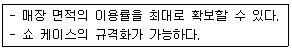
- 직각배치법
- 사행배치법
- 방사배치법
- 자유유선배치법
(정답률: 78%)
20. 사무소 건축의 코어 유형 중 편심형 코어에 관한 설명으로 옳은 것은?
- 구조적으로 가장 바람직한 유형이다.
- 기준층 바닥면적이 작은 경우에 적합한 유형이다.
- 2방향 피난에 이상적인 관계로 방재상 유리한 유형이다.
- 코어를 업무공간에서 별도로 분리, 독립시킨 유형으로 분리코어라고도 한다.
(정답률: 66%)
2과목: 건축시공
21. 철골보의 설계 시 플랜지(Flange)에 커버 플레이트(Cover Plate)를 설치하는 주된 목적은?
- 휨모멘트에 대한 보강
- 전단력에 대한 보강
- 과도한 충격 하중에 대한 플랜지 보호
- 작용 하중의 분산
(정답률: 41%)
22. 철골구조의 합성보에서 철골보와 슬래브를 일체화 시킬 때 그 접합부에 생기는 전단력에 저항시키기 위하여 사용되는 접합재는?
- 쉐어 커넥터(shear connecter)
- 게이지 라인(gage line)
- 중도리(purline)
- 스페이스 프레임(space frame)
(정답률: 67%)
23. 콘크리트는 수산화칼슘이 중성인 탄산칼슘으로 변하여 알카리성을 상실하고 중성화하게 된다. 이 화학적인 반응을 유발하는 원인은?
- 질소화학물
- 염화나트륨
- 이산화탄소
- 규산칼륨
(정답률: 67%)
24. 시멘트의 응결에 대한 설명으로 옳지 않은 것은?
- 분말도가 큰 시멘트는 블리딩을 감소시킨다.
- 물시멘트비가(W/C)가 낮을수록 응결 속도가 느리다.
- 시멘트가 풍화되면 응결 속도가 늦어진다.
- 분말도가 큰 시멘트는 비표면적이 증대된다.
(정답률: 67%)
25. 타일에 관한 설명으로 옳지 않은 것은?
- 자기질 타일은 용도상 내ㆍ외장 및 바닥용으로 사용되며 소성온도는 1,300~ 1,400℃이다.
- 석기질 타일은 현대건축의 벽화타일이나 이미지타일로서 폭넓게 활용되고 있다.
- 도기질 타일은 내구성ㆍ내수성이 강하여 옥외나 물기가 있는 곳에 주로 사용된다.
- 티타늄타일은 500℃ 전후의 고온에서도 그 성질이 변하지 않으며 내식성도 우수하다.
(정답률: 66%)
26. 건설계약에서 지명경쟁 입찰을 택하는 가장 큰 이유는?
- 건축공사비를 절감하기 위해서
- 공사 준공기일을 빠르게 하기 위해서
- 양질의 시공결과를 얻기 위해서
- 공사감리를 편하게 하기 위해서
(정답률: 76%)
27. 건설 프로젝트의 비용 및 일정에 대한 계획 대비실적을 통합된 기준으로 비교, 관리하는 통합공정관리 시스템은?
- EVMS(Earned Value Management System)
- QC(Quality Control)
- CIC(Computer Integrated Construction)
- CALS(Continuous Acquisition& Life cycle Support)
(정답률: 65%)
28. 지름 15cm, 높이 30cm인 원주 공시체 콘크리트의 재령 28일의 압축강도를 시험하였더니 500kN에서 파괴되었다. 이 콘크리트의 최대압축강도는? (단, π는 3.14로 계산)
- 7.00MPa
- 11.1MPa
- 22.2MPa
- 28.3MPa
(정답률: 40%)
29. 난간벽 위에 설치하는 돌을 무엇이라 하는가?
- 쌤돌
- 두겁돌
- 인방돌
- 창대돌
(정답률: 62%)
30. 철근의 정착 위치에 대한 설명으로 옳지 않은 것은?
- 기둥의 주근은 기초에 정착한다.
- 보의 주근은 기둥에 정착한다.
- 직교하는 단부 보 밑에 기둥이 없을 때에는 벽체에 정착한다.
- 벽철근은 기둥, 보, 기초 또는 바닥판에 정착한다.
(정답률: 60%)
31. 건축공사표준시방서에 기재하는 사항으로 가장 거리가 먼 것은?
- 사용 재료
- 공법, 공사 순서
- 공사비
- 시공 기계, 기구
(정답률: 78%)
32. 벽돌 벽체에 생기는 백화현상을 방지하기 위한 조치로 옳지 않은 것은?
- 줄눈 모르타르에 석회를 혼합하여 우수의 침입을 방지한다.
- 처마를 충분히 내고 벽에 직접 비가 맞지 않도록 한다.
- 잘 소성된 벽돌을 사용한다.
- 줄눈을 충분히 사춤하고 줄눈 모르타르에 방수제를 넣는다.
(정답률: 63%)
33. 콘크리트의 슬럼프 테스트(slump test)는 콘크리트의 무엇을 판단하기 위한 수단인가?
- 압축강도
- 워커빌리티(workability)
- 블리딩(bleeding)
- 공기량
(정답률: 70%)
34. 콘크리트 공사에서 시공연도를 증진시키는 혼화재료가 아닌 것은?
- AE제
- 플라이애쉬
- 포졸란
- 급경제
(정답률: 61%)
35. 공사진행의 일반적인 순서로 알맞은 것은?
- 공사착공 준비 → 가설공사 → 토공사 → 지정 및 기초공사 → 구조체 공사
- 공사착공 준비 → 토공사 → 가설공사 → 구조체 공사 → 지정 및 기초공사
- 공사착공 준비 → 지정 및 기초공사 → 가설공사 → 토공사 → 구조체 공사
- 공사착공 준비 → 구조체 공사 → 지정 및 기초공사 → 토공사 → 가설공사
(정답률: 70%)
36. 목구조에서 부재의 이음과 맞춤을 할 때 주의사항으로 옳지 않은 것은?
- 부재의 응력이 적은 곳에서 한다.
- 이음과 맞춤의 단면은 응력의 방향과 관계없이 시공하기에 쉬워야 한다.
- 맞춤면은 정확히 가공하여 서로 밀착되어 빈틈이 없게 한다.
- 공작이 간단한 것을 쓰고 모양에 치중하지 않는다.
(정답률: 66%)
37. 표준관입시험에 관한 내용으로 옳지 않은 것은?
- N의 값은 샘플러가 30cm 관입하는데 요하는 타격횟수이다.
- 추의 무게는 63.5kg이다.
- N값이 클수록 밀실한 토질이다
- 추의 낙하 높이는 1m 정도이다.
(정답률: 70%)
38. 콘크리트의 배합설계에 있어 물시멘트비를 결정하는 것과 관계가 가장 적은 것은?
- 소요강도
- 내구성
- 수밀성
- 내마모성
(정답률: 64%)
39. 탄소강에 니켈, 망간, 규소 등을 소량 첨가하여 열간 및 냉간 가공 과정을 거쳐 보통 철근보다 강도를 향상시킨 강재는?
- 원형 철근
- 고강도 철근
- 이형 철근
- 피아노선
(정답률: 80%)
40. 시공용 기계ㆍ기구와 용도가 서로 잘못 짝지어진 것은?
- 임팩트렌치 - 볼트 체결 작업
- 디젤 해머 - 말뚝박기 공사
- 핸드 오거 - 지반조사시험
- 드리프트 핀 - 철근공사
(정답률: 61%)
3과목: 건축구조
41. T형보의 유효폭 B의 값은? (단, 보의 스팬은 15m이다.)
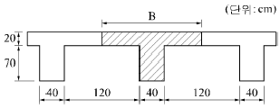
- 375cm
- 360cm
- 210cm
- 160cm
(정답률: 59%)
42. 탄성하중법의 원리를 적용시킬 수 있도록 단부의 조건을 변화시켜 처짐을 구하는 방법은?
- 3연 모멘트법
- 처짐각법
- 모멘트 분배법
- 공액(共扼)보법
(정답률: 52%)
43. 그림의 트러스에 관한 설명 중 옳지 않은 것은?
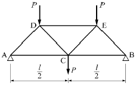
- AD재는 압축재이다.
- AC재는 인장재이다.
- DE재는 인장재이다.
- CD재는 인장재이다.
(정답률: 51%)
44. 철근과 콘크리트 사이의 부착력에 영향을 주는 요인에 관한 설명 중 옳지 않은 것은?
- 철근의 강도가 증가할수록 부착력은 높아진다.
- 콘크리트의 강도가 증가할수록 부착력은 높아진다.
- 수평철근에서 상부철근보다 하부철근의 부착력이 높아진다.
- 지름이 큰 철근보다 동일면적의 지름이 작은 여러개의 철근을 사용하면 부착력이 높아진다.
(정답률: 50%)
45. 철근콘크리트 줄기초의 철근 정착을 검토한 결과 사용 철근의 정착 길이가 부족하다. 이에 대한 대책으로 옳지 않은 것은?
- 동일면적의 직경이 큰 철근을 사용한다.
- 기초의 폭을 넓혀 정착 길이를 추가 확보한다.
- 콘크리트의 강도를 크게 한다.
- 철근 단부의 후크를 사용한다.
(정답률: 41%)
46. 트러스의 기본가정 및 해석에 관한 설명 중 옳지 않은 것은?
- 트러스의 각 절점은 고정단이며, 트러스에 작용하는 하중은 절점에 집중하중으로 작용한다.
- 절점을 연결하는 직선은 부재의 중심축과 일치하고 편심모멘트가 발생하지 않는다.
- 같은 직선상에 있지 않은 2개의 부재가 모인 절점에서 그 절점에 하중이 작용하지 않으면 부재력은 0이다.
- 3개의 부재가 모인 절점에서 두 부재축이 일직선으로 이루어진 두 부재의 부재력은 같다.
(정답률: 46%)
47. 4변이 고정인 2방향슬래브(two way slab)에서 가장 많이 하중을 받는 곳은?
- 장변방향 단부
- 장변방향 중앙부
- 단변방향 단부
- 단변방향 중앙부
(정답률: 48%)
48. 그림과 같은 완전대칭 라멘 구조에서 BE부재에 발생되는 휨모멘트 MBE의 크기는?
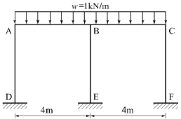
- 0
- 1.5kNㆍm
- 2kNㆍm
- 4kNㆍm
(정답률: 54%)
49. 강구조 고력볼트 접합에서 표준볼트 장력은 설계볼트 장력의 몇 배로 조임을 실시하는가?
- 1.1배
- 1.2배
- 1.3배
- 1.4배
(정답률: 49%)
50. 강도설계법에서 그림과 같은 단면을 가지는 단근보의 설계모멘트(øMn)는? (단, fck=27MPa, fy=400MPa, As=2,871mm2)
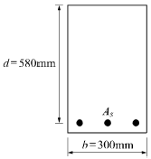
- 381.33kNㆍm
- 484.75kNㆍm
- 569.64kNㆍm
- 715.66kNㆍm
(정답률: 47%)
51. 다음 기둥단면에서 발생하는 최대응력도의 크기는?
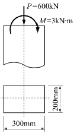
- 8MPa
- 11MPa
- 14MPa
- 17MPa
(정답률: 46%)
52. 그림과 같은 단순보에서 A지점의 수직반력은?
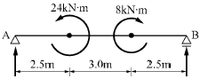
- 1kN
- 2kN
- 3kN
- 4kN
(정답률: 43%)
53. 다음 그림은 단면의 핵을 표시한 것이다. ex, ey의 값으로 옳은 것은?
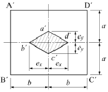
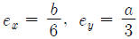
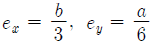
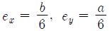
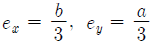
(정답률: 49%)
54. 말뚝재료별 구조 세칙에 관한 기술 중 옳지 않은 것은?
- 나무말뚝을 타설할 때 그 중심 간격은 말뚝머리지름의 2.5배 이상 또한 600mm 이상으로 한다.
- 기성 콘크리트 말뚝을 타설할 때 그 중심 간격은 말뚝머리지름의 2.5배 이상 또한 750mm 이상으로 한다.
- 강재말뚝을 타설할 때 그 중심 간격은 말뚝머리의 지름 또는 폭의 1.5배 이상 또한 700mm 이상으로 한다.
- 현장타설 콘크리트 말뚝을 배치할 때 그 중심 간격은 말뚝머리 지름의 2.0배 이상 또한 말뚝머리 지름에 1000mm를 더한 값으로 한다.
(정답률: 48%)
55. 강구조 기둥의 주각부분에 사용되는 것이 아닌 것은?
- 앵커 볼트(Anchor bolt)
- 리브 플레이트(Rib plate)
- 플레이트 거더(Plate girder)
- 베이스 플레이트(Base plate)
(정답률: 58%)
56. 철선의 길이 ℓ=1.5m에 인장하중을 가하여 길이가 1.5009m로 늘어났을 때 변형율은(ε)은?
- 0.0003
- 0.00⑤
- 0.0006
- 0.0008
(정답률: 57%)
57. 정사각형 독립기초에서 뚫림 전단(punching shear) 응력을 산정할 때 검토하는 위험단면의 면적은 얼마인가? (단, 유효깊이 d=600mm, 위험단면의 경계는 기둥의 경계로부터 d/2로 계산)
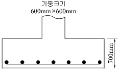
- 2,480,000mm2
- 2,680,000mm2
- 2,880,000mm2
- 3,080,000mm2
(정답률: 47%)
58. 보의 자중이 1.0kN/m이고 적재하중이 1.2kN/m인 등 분포하중을 받는 스팬 6m인 단순보의 설계용 휨모멘트의 크기는?
- 11.4kNㆍm
- 12.4kNㆍm
- 13.4kNㆍm
- 14.4kNㆍm
(정답률: 32%)
59. 그림과 같은 켄틸레버 보의 길이(L)를 2L로 할 경우에 최대 처짐량은 몇 배로 커지는가?
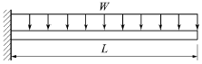
- 2배
- 4배
- 8배
- 16배
(정답률: 39%)
60. 폭이 300mm, 유효 깊이가 500mm인 직사각형 보에서 콘크리트가 부담하는 설계전단강도(øVc)를 구하면? (단, 보통중량 콘크리트, fck=24MPa)
- 61.9kN
- 71.9kN
- 81.9kN
- 91.9kN
(정답률: 42%)
4과목: 건축설비
61. 기계적 에너지가 아닌 열에너지에 의해 냉동 효과를 얻는 냉동기는?
- 흡수식 냉동기
- 터보식 냉동기
- 왕복동식 냉동기
- 스크루식 냉동기
(정답률: 66%)
62. 습공기를 가습하는 경우, 다음의 상대 값 중 변화하지 않는 것은?
- 건구온도
- 습구온도
- 절대습도
- 상대습도
(정답률: 30%)
63. 다음은 조명설비와 관련된 용어에 관한 설명이다. ( )안에 알맞은 내용은?
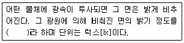
- 광도
- 휘도
- 조도
- 광속발산도
(정답률: 69%)
64. 공기조화방식 중 팬코일 유닛 방식에 관한 설명으로 옳지 않은 것은?
- 각 실 유닛의 개별 제어가 용이하다.
- 각 실에 수배관으로 인한 누수의 우려가 없다.
- 덕트방식에 비해 유닛의 위치 변경이 용이하다.
- 덕트 샤프트나 스페이스가 필요 없거나 작아도 된다.
(정답률: 55%)
65. 제1종 접지공사의 접지저항 값은 최대 얼마 이하로 유지하여야 하는가?
- 5[Ω]
- 10[Ω]
- 50[Ω]
- 100[Ω]
(정답률: 59%)
66. 급기와 배기측에 팬을 부착하여 정확한 환기량과 급기량 변화에 의해 실내압을 정압(+) 또는 부압(-)으로 유지할 수 있는 환기방법은?
- 자연환기
- 제1종 환기
- 제2종 환기
- 제3종 환기
(정답률: 67%)
67. 3상 평형부하에 220[V]의 전압을 가하니 10[A]의 전류가 흘렀다. 역률이 0.75일 때 소비되는 전력은?
- 약 953[W]
- 약 2858[W]
- 약 4950[W]
- 약 5081[W]
(정답률: 52%)
68. 건물 내의 급수방식 중 고가수조방식에 관한 설명으로 옳은 것은?
- 단수시에도 일정량의 급수가 가능하다.
- 3층 이상의 고층으로의 급수가 불가능하다.
- 수도 본관의 영향을 그대로 받아 수압 변화가 심하다.
- 위생성 및 유지ㆍ관리 측면에서 가장 바람직 한 방식이다.
(정답률: 71%)
69. 오배수 입상관으로부터 취출하여 위쪽의 통기관에 연결되는 배관으로, 오배수 입상관 내의 압력을 같게하기 위한 도피통기관은?
- 각개통기관
- 결합통기관
- 공용통기관
- 신정통기관
(정답률: 56%)
70. 수질 관련 용어 중 BOD가 의미하는 것은?
- 용존산소량
- 수소이온농도
- 화학적 산소요구량
- 생물화학적 산소요구량
(정답률: 77%)
71. 용량 1kW의 커피포트로 1L의 물을 10℃에서 100℃까지 가열하는데 걸리는 시간은? (단, 열손실은 없으며, 물의 비열은 4.2kJ/kgㆍK, 밀도는 1kg/L이다.)
- 3.6분
- 4.8분
- 6.3분
- 12.2분
(정답률: 45%)
72. 최대 방수구역에 설치된 스프링클러헤드의 개수가 10개일 때 스프링클러설비의 수원의 최소 필요 저수량은? (단, 개방형스프링클러헤드를 사용하는 스프링클러설비의 경우)
- 8m3
- 16m3
- 40m3
- 32m3
(정답률: 54%)
73. 급탕기기 용량에 관한 설명으로 옳지 않은 것은?
- 일반적으로 가열기 능력과 저탕 탱크 용량과의 사이에는 반비례 관계가 있다.
- 급탕기기는 건물 내 사람의 일일 사용량과 피크 시간대에 대응할 수 있는 용량으로 선정한다.
- 동시사용율이 높은 건물은 일반적으로 가열기 능력을 작게 하고 저장탱크는 대용량으로 한다.
- 가열장치의 능력에는 단위시간 내에 물을 가열할 수 있는 가열능력과 피크 사용시에 대비해 온수를 저장하는 저탕용량이 있다.
(정답률: 57%)
74. 간선 배선방식 중 평행식에 관한 설명으로 옳지 않은 것은?
- 전압 강하가 평균화된다.
- 사고 발생시 파급되는 범위가 좁다.
- 배선이 간편하고 설비비가 적어진다.
- 배전반으로부터 각 층의 분전반까지 단독으로 배선 된다.
(정답률: 48%)
75. 대변기의 세정방식 중 버큠 브레이커의 설치가 요구되는 것은?
- 세라식
- 로 탱크식
- 하이 탱크식
- 세정 밸브식
(정답률: 59%)
76. 열매가 증기인 경우, 방열기의 표준 방열량은?
- 0.450kW/m2
- 0.523kW/m2
- 0.650kW/m2
- 0.756kW/m2
(정답률: 58%)
77. 다음 중 배수설비에서 봉수의 파괴원인과 가장 거리가 먼 것은?
- 증발현상
- 공동현상
- 모세관현상
- 자기사이펀작용
(정답률: 63%)
78. 주철제 보일러에 관한 설명으로 옳지 않은 것은?
- 내식성이 우수하다.
- 조립식이므로 분할 반입이 용이하다.
- 재질이 약하여 고압으로 사용이 곤란하다.
- 대형건물이나 지역난방 등에 주로 사용된다.
(정답률: 54%)
79. 다음은 공기조화용 공급 덕트 내 압력을 나타낸 것이다. 일반적으로 그 값이 가장 큰 것은?
- 전압
- 정압
- 동압
- 대기압
(정답률: 49%)
80. 다음의 공기조화방식 중 전공기 방식에 속하지 않는 것은?
- 단일덕트방식
- 이중덕트 방식
- 유인 유닛 방식
- 멀티존 유닛 방식
(정답률: 60%)
5과목: 건축관계법규
81. 건축물의 대지는 원칙적으로 최소 얼마 이상이 도로에 접하여야 하는가? (단, 자동차만의 통행에 사용되는 도로는 제외)
- 1m
- 1.5m
- 2m
- 3m
(정답률: 70%)
82. 다음은 건축물의 사용승인에 관한 기준 내용이다. ( )안에 알맞은 것은?
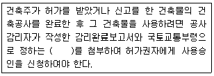
- 사용승인서
- 공사완료도서
- 표준설계도서
- 감리중간보고서
(정답률: 59%)
83. 노외주차장의 주차형식에 따른 차로의 최소 너비 관계를 옳게 나열한 것은? (단, 이륜자동차전용 외의 노외주차장으로서 출입구가 2개인 경우)
- 평행주차＜직각주차＜교차주차
- 평행주차＜60도 대향주차＜직각주차
- 45도 대향주차＜60도 대향주차＜교차주차
- 45도 대향주차＜평행주차＜60도 대향주차
(정답률: 73%)
84. 그림과 같은 단면을 갖는 거실의 반자높이는?
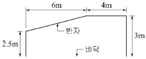
- 2.5m
- 2.75m
- 2.85m
- 3.0m
(정답률: 56%)
85. 건축물에 급수ㆍ배수ㆍ난방 및 환기설비를 설치하는 경우, 건축설비기술사 또는 공조냉동 기계기술사의 협력을 받아야 하는 대상 건축물의 연면적 기준은? (단, 창고시설은 제외)
- 3000m2이상
- 5000m2이상
- 10000m2이상
- 15000m2이상
(정답률: 65%)
86. 국토의 계획 및 이용에 관한 법령상 자연녹지 지역 안에서의 건페율 기준은?
- 10% 이하
- 20% 이하
- 30% 이하
- 40% 이하
(정답률: 71%)
87. 다음 중 부설주차장의 최소 설치대수가 가장 많은 시설물은? (단, 시설면적이 1000m2인 경우)
- 장례식장
- 종교시설
- 판매시설
- 위락시설
(정답률: 63%)
88. 건축법령상 다음과 같이 정의되는 용어는?
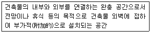
- 테라스
- 발코니
- 베란다
- 부속용도
(정답률: 62%)
89. 건축물의 건축에 있어 건축물 관련 건축기준의 허용오차 범위로 옳지 않은 것은?
- 출구너비 : 3% 이내
- 반자너비 : 2% 이내
- 벽체두께 : 3% 이내
- 바닥판두께 : 3% 이내
(정답률: 60%)
90. 지역의 환경을 쾌적하게 조성하기 위하여 일반이 사용할 수 있도록 소규모 휴식시설 등의 공개 공지 또는 공개 공간을 설치하여야 하는 대상 지역에 속하지 않는 것은?
- 준주거지역
- 준공업지역
- 전용주거지역
- 일반주거지역
(정답률: 55%)
91. 주차장의 주차단위구획(일반형) 기준으로 옳은 것은? (단, 평행주차형식 외의 경우)
- 너비 1.7m 이상, 길이 4.5m 이상
- 너비 2.0m 이상, 길이 5.0m 이상
- 너비 2.5m 이상, 길이 5.0m 이상
- 너비 3.3m 이상, 길이 5.0m 이상
(정답률: 57%)
92. 공작물을 축조할 때 특별자치시장ㆍ특별자치도지사 또는 시장ㆍ군수ㆍ구청장에게 신고를 하여야 하는 대상 공작물에 속하는 것은?
- 높이가 5m인 굴뚝
- 높이가 5m인 광고탑
- 높이가 5m인 장식탑
- 높이가 5m인 기념탑
(정답률: 63%)
93. 다음 중 주요구조부를 내화구조로 하여야 하는 건축물은?
- 종교시설의 용도로 쓰는 건축물로서 집회실의 바닥면적의 합계가 300m2인 건축물
- 공장의 용도로 쓰는 건축물로서 그 용도로 쓰는 바닥면적의 합계가 1000m2인 건축물
- 판매시설의 용도로 쓰는 건축물로서 그 용도로 쓰는 바닥면적의 합계가 300m2인 건축물
- 관광휴게시설의 용도로 쓰는 건축물로서 그 용도로 쓰는 바닥면적의 합계가 400m2인 건축물
(정답률: 35%)
94. 가로구역별 건축물의 높이제한과 관련하여 다음과 같은 건축물의 높이는? (단, 망루부분의 수평투영면적은 당해 건축물 건축 면적의 1/10이다.)
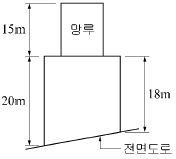
- 19m
- 20m
- 22m
- 35m
(정답률: 67%)
95. 다음 중 설치하여야 하는 승용승강기의 최소 대수가 가장 많은 건축물의 용도는? (단, 6층 이상의 거실면적의 합계가 3000m2이며, 15인승 승강기를 설치하는 경우)
- 업무시설
- 판매시설
- 위락시설
- 노유자시설
(정답률: 49%)
96. 다음 중 건축법령상 공동주택에 속하지 않는 것은?
- 아파트
- 연립주택
- 다중주택
- 다세대주택
(정답률: 65%)
97. 다음 중 제1종 전용주거지역 안에서 건축할 수 있는 건축물에 속하지 않는 것은?
- 공관
- 아파트
- 다중주택
- 단독주택 중 단독주택
(정답률: 73%)
98. 다음은 창문 등의 차면시설에 관한 기준 내용이다. ( )안에 알맞은 것은?
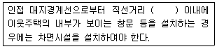
- 1m
- 2m
- 3m
- 5m
(정답률: 66%)
99. 사용승인 후 5년이 지난 연면적 1000m2미만의 건축물의 용도를 변경하는 경우 부설주차장을 추가로 확보하지 아니하고 건축물의 용도를 변경할 수 있는 것은? (단, 변경 후 용도의 주차대수가 많은 경우)
- 업무시설의 용도로 변경하는 경우
- 위락시설의 용도로 변경하는 경우
- 문화 및 집회시설 중 공연장의 용도로 변경하는 경우
- 문화 및 집결시설 중 관람장의 용도로 변경하는 경우
(정답률: 44%)
100. 비상용승강기 승강장의 구조에 관한 기준 내용으로 옳지 않은 것은?
- 채광이 되는 창문이 있거나 예비전원에 의한 조명설비를 할 것
- 벽 및 반자가 실내에 접하는 부분의 마감재료는 불연재료로 할 것
- 옥내 승강장의 바닥면적은 비상용승강기 1대에 대하여 6m2이상으로 할 것
- 피난층이 있는 승강장의 출입구로부터 도로 또는 공지에 이르는 거리가 30m 이상일 것
(정답률: 49%)
주택단지의 총세대수가 300세대 미만인 경우 진입도로의 폭은 최소 10m 이상으로 하여야 하는 이유는, 대형차량이나 구급차 등이 출입하기에 충분한 공간이 필요하기 때문입니다. 또한, 비상상황이 발생할 경우 대피 및 구조활동이 원활하게 이루어질 수 있도록 충분한 공간이 마련되어야 합니다.